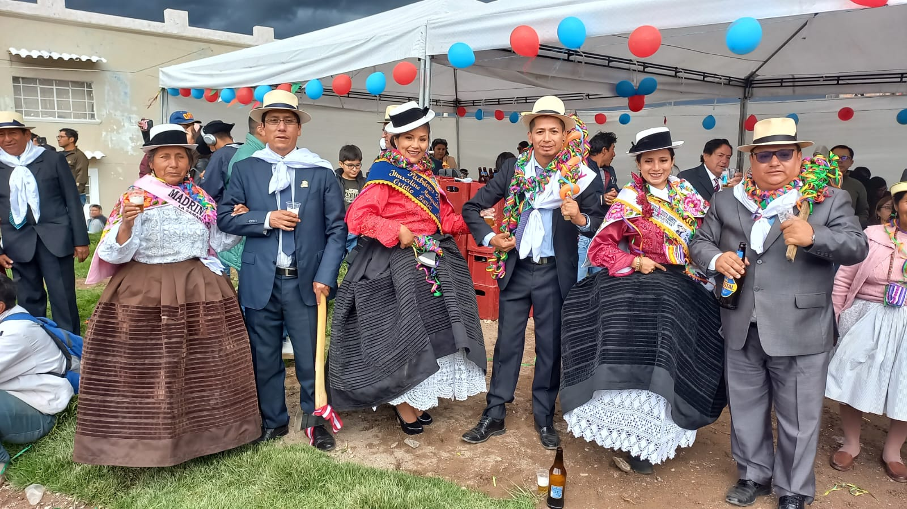

FALTA POCO PARA NUESTRO HERMOSO CARNAVAL JAUJINO..!!
99
DIAS23
HORAS11
MINUTOS12
SEGUNDOS

Nuestros Padrinos

Padrinos de cortamonte 2023
1er Monte
Erick Osorio Pariona
Vilma Pariona Carranza
2do Monte
Juan Terrazos Rodriguez
Nataly Larrea Astacuri
3er Monte
Ovidio Barja Rosales
Jhuceline Munguia Romero
Padrinos de cortamonte 2024
1er Monte
Prudencio Garcia Herrera +
Adelina Ortega de Garcia +
En honor a nuestros ilustres vecinos, quienes estan al lado de nuestro señor.
Recuerdos de sus hijos; Katy, joel, cristian.
2do Monte
Alex Lizandro Osrio Pariona
Yoni Sanchez J.
3er Monte
Ovidio Barja Rosales
Jhuceline Munguia Romero
4to Monte
Jose Fernandez Yupanqui Bonilla
Monica Liz Cordero Bonilla